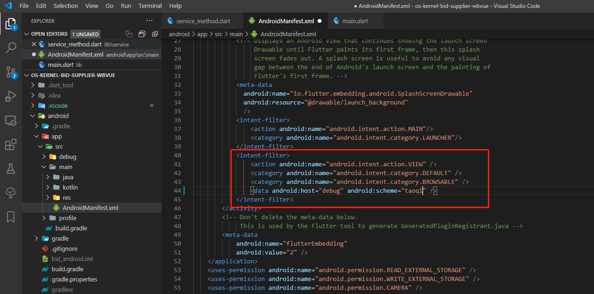

flutter通过外链唤起app注入代理设置

flutter 通过外链唤起 app 注入代理设置
问题背景
在 Flutter 中进行网络请求时，我们可以使用的库有 3 个，即 Http 请求库、HttpClient 请求库和 Dio 请求库
），使用得最多的就是 Dio 请求库。因为相比 Http 请求库和 HttpClient 请求库，Dio 库不仅支持常见的网络请求，还支持 Restful API、FormData、拦截器、请求取消、Cookie 管理、文件上传/下载、超时等操作。不过，默认情况下，Dio 进行网络请求时是不支持抓包的，所以如果要进行抓包，就需要对 Dio 进行请求封装，并编写代理代码。
转自: https://segmentfault.com/a/1190000023654714?utm_source=tag-newest
经查阅 dio 的文档，发现可以设置 http 代理：
Dio dio = new Dio();
(dio.httpClientAdapter as DefaultHttpClientAdapter).onHttpClientCreate =
(HttpClient client) {
client.findProxy = (uri) {
return "PROXY 10.10.25.80:8888";
};
};
解决方案
参见:flutter 完美抓包解决方案
阅读一番后，其实不外乎是基于官网给的方式去演绎，使我们能够更加便捷地去设置代理 IP 和端口。
当然，你可以通过 wireshark 去抓包，这里都是针对 fiddler 这样的工具提供抓包支持。
以下笔者将基于参考链接的原文内容进行详细的演绎说明。
方式一: 硬编码
(_dio.httpClientAdapter as DefaultHttpClientAdapter).onHttpClientCreate =
(client) {
//这一段是解决安卓https抓包的问题
client.badCertificateCallback =
(X509Certificate cert, String host, int port) {
return Platform.isAndroid;
};
client.findProxy = (uri) {
return "PROXY 代理ip:代理port";
};
};方式二: 编写原生插件
缺点:
- 安卓无法获取
- 编写成本高, 对不是原生开发者不够友好
优点: IOS 可行
//自动获取手机代理
NSDictionary *proxySettings = (__bridge NSDictionary *)(CFNetworkCopySystemProxySettings());
NSArray *proxies = (__bridge NSArray *)(CFNetworkCopyProxiesForURL((__bridge CFURLRef _Nonnull)([NSURL URLWithString:call.arguments]), (__bridge CFDictionaryRef _Nonnull)(proxySettings)));
NSString *hostName = proxySettings[@"HTTPSProxy"];
NSString *portName = [NSString stringWithFormat:@"%@",proxySettings[@"HTTPPort"]];
long HTTPEnable = [proxySettings[@"HTTPEnable"] longValue];
if (HTTPEnable==0) {
hostName = @"";
}
方式三: 采用 scheme 协议
整体思路如下:
1，注册自己的URL Scheme，例如：scheme://
2，定义参数规则，例如：scheme://tiaoshi?host=10.0.206.163
3，引入flutter插件：uni_links: ^0.2.0
4，flutter监听解析参数，并在dio里面设置代理
5，使用[草料]https://cli.im生成一个二维码：内容：scheme://tiaoshi?host=10.0.206.163
6，使用二维码扫描工具扫描生成的二维码唤起APPURL Scheme
Scheme 用于从浏览器或其他应用中启动本应用。也就是说要从其他应用中跳转本应用的界面或者网页跳转本应用打开特定的界面。
Scheme 协议格式
protocol :// hostname[:port] / path / [;parameters][?query]#fragmentprotocol： 协议也就是你定义的 scheme
hostname： 地址域
port： 端口
path： 路径
params： 参数
小试牛刀
第一步: 修改 AndroidManifest.xml
NOTE:
flutter 工程目录/android/app/src/main/AdroidManifest.xml
在<activity></activity>之间的最后面加入如下代码:
<intent-filter>
<action android:name="android.intent.action.VIEW" />
<category android:name="android.intent.category.DEFAULT" />
<category android:name="android.intent.category.BROWSABLE" />
<data android:host="debug" android:scheme="taoqi" />
</intent-filter>
第二步： pubspec.yaml 文件中引入 uni_links
dependencies:
flutter:
sdk: flutter
flutter_localizations:
sdk: flutter
# The following adds the Cupertino Icons font to your application.
# Use with the CupertinoIcons class for iOS style icons.
uni_links: ^0.2.0第三步: 封装一个 pocket_capture.dart
import 'dart:async';
import 'package:uni_links/uni_links.dart';
//设置抓包
class Packetcapture {
static StreamController _packetcaptureListener =
new StreamController.broadcast(); //抓包监听
static Map<Function, StreamSubscription> _listeners = {};
//这两个数据根据你自己的项目修改
static String scheme = "taoqi://";
static String mode = "debug";
//设置自己的scheme
static setConfig({String schemeConfig, String modeConfig}) {
scheme = schemeConfig;
mode = modeConfig;
}
//通过topsports://设置抓包代理
static Future<Null> initUniLinks({Function callBack}) async {
print('------获取参数--------');
try {
//app没有打开时获取link
String link = await getInitialLink();
if (link != null && link.contains(scheme)) {
setNetworkAgent(link, callBack: callBack);
}
} catch (e) {}
//app打开时获取link
getLinksStream().listen((String link) {
link = Uri.decodeComponent(link);
if (link.contains(scheme)) {
setNetworkAgent(link, callBack: callBack);
}
// Parse the link and warn the user, if it is not correct
}, onError: (err) {
// Handle exception by warning the user their action did not succeed
});
}
static setNetworkAgent(String link, {Function callBack}) {
print('=======link:$link============');
String type = getTypeStr(link);
if (type == mode) {
String param = link.replaceAll("$scheme$type?", "");
Map dict = getUrlParams(param);
//设置抓包代理
String host = dict["host"];
String port = dict["port"] ?? "8888";
if (callBack != null) {
callBack(host, port);
}
packetcapture("");
}
}
static String getTypeStr(String link) {
List params = link.split("?");
String typeStr = params[0];
typeStr = typeStr.replaceAll(scheme, "");
return typeStr;
}
//url参数转map
static Map getUrlParams(String paramStr) {
Map map = Map();
List params = paramStr.split("&");
for (int i = 0; i < params.length; i++) {
String str = params[i];
List arr = str.split("=");
map[arr[0]] = arr[1];
}
return map;
}
//抓包广播
static void packetcapture(String code) {
_packetcaptureListener.add(code);
}
//添加抓包监听
static void addPacketcaptureListener(void onData(String code)) {
_listeners[onData] = _packetcaptureListener.stream.listen(onData);
}
//取消监听
static void removeListener(void onData(dynamic data)) {
StreamSubscription listener = _listeners[onData];
if (listener == null) return;
listener.cancel();
_listeners.remove(onData);
}
}
第四步: 在 main 入口里边添加监听
NOTE:
这里我是封装了一个公用的 main 入口函数
真正的 main.dart 会这样调用import ‘package:bid/config/environment.dart’;
import ‘package:bid/config/main_common.dart’;Future
main() async {
await mainCommon(Environment.DEV);
}
秉承只提供思路的原则，不贴可运行完整代码.
/**
* 公共的启动Main方法.
* @author: DANTE FUNG
* @date: 2020-9-9 15:53:14
*/
Future<void> mainCommon(String env) async {
WidgetsFlutterBinding.ensureInitialized();
// 初始化代理配置监听
Packetcapture.initUniLinks(callBack: (host, port) {
Network.setHttpProxy(host, port);
});
// 省略其他代码
}Network 工具类(工具类大家应该都会封装)里边的关键代码:
static void setHttpProxy(String host, String port) {
if (host.length != 0) {
AppManager.httpProxy = host + ':' + port;
} else {
AppManager.httpProxy = '';
}
_initDio();
}
NOTE:
这里简单说明下 AppManager 工具类（不一定要像我一样用一个类封装起来，你可以用全局变量或者局部变量传参都行），代码定义如下:
class AppManager {
static String httpProxy = ‘’;}
_initDio()方法的关键代码:
_dio = Dio(BaseOptions(
contentType: 'application/json',
// baseUrl: Config.BASE_URL,
));
_dio.options.receiveTimeout = 5000;
_dio.options.connectTimeout = 30000;
if (AppManager.httpProxy.length > 5) {
(_dio.httpClientAdapter as DefaultHttpClientAdapter).onHttpClientCreate =
(client) {
//这一段是解决安卓https抓包的问题
client.badCertificateCallback =
(X509Certificate cert, String host, int port) {
return Platform.isAndroid;
};
client.findProxy = (uri) {
//注入代理
LogUtils.debug(
TAG,
sprintf('=======>注入的代理地址为:%s', [AppManager.httpProxy]),
StackTrace.current);
return "PROXY ${AppManager.httpProxy}";
};
};
}第五步: 用任意一家二维码生成工具去生成这段地址taoqi://debug?host=你的主机地址&?port=你的代理端口的二维码

第六步: 前提条件是你要安装好你要调试的 APP 在模拟器里。打开 MUMU 模拟器, 然后打开共享文件夹，将生成的二维码放入该文件夹中:


第七步: 使用 fiddler 抓包。相关的配置说明请百度即可。特别说明:雷电模拟器似乎无法进行抓包，问题不得知。
建议使用 MUMU 模拟器。
关于如何让 VS code 连接 MUMU 模拟器，这里简单说明下:
- 打开 MUMU 模拟器以下目录 如:
D:\Program Files (x86)\MuMu\emulator\nemu\vmonitor\bin- 打开命令行终端进入该目录，然后执行如下命令:
adb_server.exe connect 127.0.0.1:7555- 在 flutter 工程目录下，执行终端命令
flutter devices就能识别到 MUMU 模拟器了.
致谢
感谢该作者提供的代码参考: https://github.com/18138870200/flutter_sg_mvvm
本博客所有文章除特别声明外，均采用 CC BY-SA 4.0 协议 ，转载请注明出处！